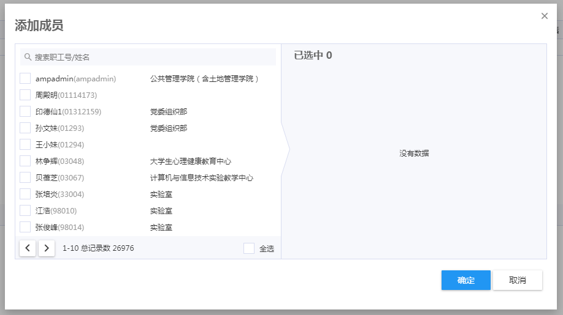

快速开始
项目地址：https://github.com/Kaisir/itpub，campuscrowd开发者生态群：489619187，欢迎加群并讨论EMAP开发与itpub使用的相关问题。
首次配置
- 搭建好
EMAP开发环境，最低需要jdk1.6 - 在
workspace目录执行命令git clone git@github.com:Kaisir/itpub.git来下载应用包 - 拷贝
lombok.jar至studio目录，jar包可以在应用的lib文件夹找到 - 修改
studio目录下的studio.ini文件，在末尾添加-javaagent:lombok.jar - 打开
emap studio，确认应用没有报错（应用版本不是1.5的错误可以忽略）
如何继承
每次新建应用后，想要使用itpub，需要新建一些必需的文件，这些文件与业务无关且每次都是固定的，可以使用以下方法自动生成：
快速继承itpub
- 创建业务应用
- 打开业务应用的
app_info.xml，找到<name>和<cname>标签 - 访问
http://localhost:8080/emap/sys/itpub/initApp.do?name=应用英文名&cname=应用中文名，观察返回的结果 - 刷新应用目录，确认生成的文件，自动生成的文件包括
AppIndexController、common.jsp、source.jsp，修改的文件包括index.jsp、config.js、.classpath、EMAP_APP - 输入
http://localhost:8080/emap/sys/应用英文名/auth.do进行授权（与funauthapp授权原理相同） - 输入
http://localhost:8080/emap/sys/应用英文名/index.do访问首页
生成dao类和impl类
- 访问
http://localhost:8080/emap/sys/itpub/genDao.do?name=应用英文名&dao=目标dao名 dao名一般为数据模型名称，例如：T_TEST_TABLE- 刷新相应的文件夹，确认生成的文件，自动生成的文件包括
T_TEST_TABLE.java和T_TEST_TABLE_IMPL.java
注意事项
workspace目录需要放到emap开发工具的studio目录下- 并不删除默认的
index目录，请手动删除 - 重复执行不会覆盖，需要手动删除模板文件后才可再次执行
- 每次执行都会批量生成上述所有文件，不支持生成指定某个文件
首次部署到学校需要检查的内容
如有修改，访问/sys/itpub/reload/reloadProps.do更新配置
select * from t_itpub_props where key like '%RESTFUL%'，总线配置select * from t_itpub_props where key ='FOOTER_VERSION_INFO'，公司or学校版权信息select * from t_itpub_props where key ='COMMON_PROPS.RES_SERVER'，res地址，默认http，如有需要请改成httpsselect * from t_itpub_props where key like '%api.fromDept%'，人员总线取部门还是学院，总线是getUsersWithDeptDetail2
常用方法
数据库操作
利用封装好的JDBC方法进行增删改查操作，具体实现请查看DbUtil.java，以下方法均以JDBC库为基础，也可以选择使用EMAP底座提供的数据模型的增删改查方法，用法与上面类似，具体实现请查看DsUtil.java。
@Autowired
private T_TEST_DAO dao;
- 保存和更新
String wid = dao.saveOrUpdate(Map<String, Object> data);//保存或更新，返回主键 dao.saveOrUpdate(List<Map<String, Object>> datas);//批量新增或更新，无返回值 - 删除
dao.deleteByWid(String wid);//根据WID删除记录 dao.delByWids(List<String> wids);//通过idList删除数据 - 查询
Map<String, Object> result = dao.queryRow(String sql, Object... params);//返回SQL语句的第一条记录 List<Map<String, Object>> result = query(String sql, Object... params);//查询所有记录 - 获取表名
String tableName = dao.getTableName();//获取表名 - 刷新字典
dao.refreshDic(String appName, String dicId);//字典id是字典配置界面的编号 - 执行
sqlString sql = "select a from test_table where b = ?"; List<Map<String, Object>> result = DbUtil.query(sql, params);
用户工具类
具体实现请参考UserUtils.java
- 获取当前登陆用户的
idString userId = UserUtils.getCurUserId(); - 获取当前登陆用户的角色
idString groupId = UserUtils.getCurGroupId(); - 获取当前用户的姓名
String userName = UserUtils.getCurrentUserName(); - 根据用户
id获取头像，type：{1 : 返回url, 2 : 返回流}String userName = UserUtils.getUserPicById(String id, String type); - 获取当前登陆用户的信息
Map<String, Object> userInfo = UserUtils.getCurrentUserInfo(); - 通过传入的
id获取用户的信息List<Map<String, Object>> users = getUsersInfo(List<String> userIds); - 根据用户
id和类型获取用户信息List<Map<String, Object>> users = getUserInfosByIds(String userId, String userType);
JSON工具类
具体实现请参考JsonUtils.java
- 将
json字符串解析成Map<String, Object>Map<String, Object> map = JsonUtils.json2Map(String jsonStr); - 将
json字符串解析成List<Map<String, Object>>List<Map<String, Object>> list = JsonUtils.toListMap(String jsonStr); - 将
json字符串解析成指定类型的数据，调用方式JsonUtils.<List<String>>json2Type("['1', '2']")，类型不匹配时候会抛出异常public static <T> T json2Type(String jsonStr); - 将对象转换为
json字符串String jsonStr = JsonUtils.toJsonStr(String str);
HTTP请求工具类
具体实现请参考HttpUtils.java
- 获取参数，指定
keyString str = HttpUtils.getParameter(String name); - 获取参数
Map<String, Object> param = HttpUtils.getParameterMap(); - 获取
RSA加密的参数，指定keyString str = HttpUtils.getRsaParameter(String name); - 发起
http请求String result = httpPost(CloseableHttpClient httpClient, HttpClientParam httpParam);
日期工具类
具体实现请参考DateUtils.java
- 获取当前时间，格式：
yyyy-MM-dd HH:mm:ssString dateStr = DateUtils.getCurrentDateTimeStr(); - 获取当前日期，格式：
yyyy-MM-ddString dateStr = DateUtils.getCurDateStr(); - 获取当前日期，格式：
yyyy/MM/ddString dateStr = DateUtils.getCurDateStr2();
包装emap对象
具体实现请参考EmapDataBuildUtil.java
- 组装
emap的下拉对象，可用于自定义字典Map<String, Object> resultMap = EmapDataBuildUtil.wrapDropList(List<?> rows); - 将动作查询的
queryResult包装为结果返回Map<String, Object> resultMap = EmapDataBuildUtil.wrapQueryResult(String action, Object queryResult);
发送消息
具体实现请参考ICommonService.java
@Autowired
private ICommonService commonSV;
/*
* 发送通用信息,指的是通过IT平台搭建的消息提醒系统
* @param xtName
* 发送消息的系统名称 eg:ymsqxt
* @param title
* 消息提醒的标题
* @param content
* 消息提醒的内容
* @param url
* 移动或者PC的url 如果含有移动和PC需要使用Constants.INVISIBLE_CHAR分割
* 其中如果没有PC的URL则前面为空 以Constants.INVISIBLE_CHAR开头
* @param recs
* 消息发送的接受用户
* @param isRecord
* 是否入库
* @throws Exception
*/
commonSV.sendCommonMsg(xtName, title, content, url, recs, isRecord);
其他方法待补充
常用前端组件
选人组件1
效果如下：

调用方法如下：
$.choosePerson(function(result) {
console.log(result);//选人之后的回调函数
},
{searchType : 'teacher'}，//人员类型：teacher,student,all
{multiSelect : true
});
选人组件2
（待补充）
获取emapflow流程图和审批记录
一般用在发起、审核、查看页面，效果如下：
第一步，在html加入如下代码，建议放在section标签的末尾：
<div
class="bh-col-md-12 bh-form-groupname sc-title-borderLeft bh-mb-24"
title="流转信息" bh-role-form-outline="title">流转信息</div>
<div id="flowprocessview" style="height: 120px;"></div>
<div id="flowprocesstable" style="height: 120px; width: 100%"></div>
<div
class="bh-col-md-12 bh-form-groupname sc-title-borderLeft bh-mb-24"
title="流转信息" bh-role-form-outline="title" style="margin-top: 15px;">流程信息</div>
<div id="flowimg"></div>
第二步，在js中调用方法：
$.getFlowView(流程id：taskId,流程定义名称：defKey)；